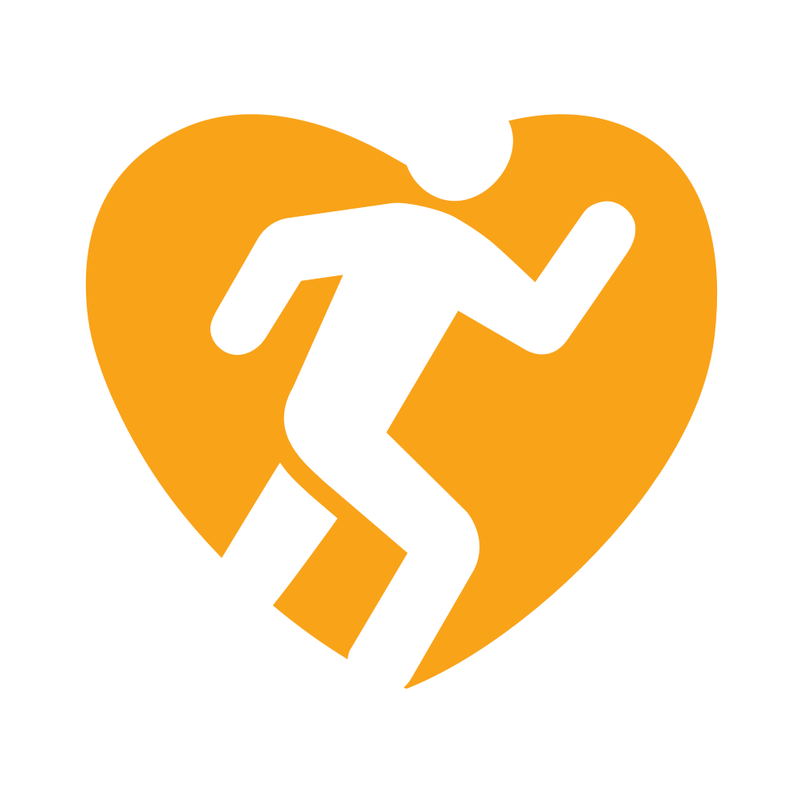

Vi er Studenter på Storbyuniversitet OsloMet. Organisasjonen vår ble grunnlagt i 2020. vi har vært veldig aktive det siste året, til nå lagde vi mange små biblioteker og skoler i flere fattige land.
Vi studenter på Oslomet velger hvert år et fattig land og bruker pengene som samles inn til å bygge skoler og biblioteker. Vi er en stor organisasjon, vi har forskjellige avdelinger. noen jobber med å samle penger og andre har ansvar for å undersøke hvilke land som trenger mest hjelp. En stor del av medlemmene våre er ikke studenter på Oslomet og vil bare hjelpe barna som kan ikke ta utdanning av mange forskjellige grunner, blant annet fattigdom. De første medlemmene av OslometBidra utførte en undersøkeske om hvorfor barn dropper ut av skolen, og dette viste at det var størst risiko hvis de ikke har skole der de bor, det er stor avstand fra der de bor til skolen, eller de at de ikke hadde tilgang til skolebøker. Derfor jobber vi for å gi disse barna muligheten til å kunne ta utdanning.
Barns rett til utdanning anerkjennes for alle barn som en juridisk rett på grunnlag av like muligheter, som informert av og i samsvar med FNs konvensjon om barnets rettigheter. Når de internasjonale standardene knyttet til barns rett til utdanning er fullt ut implementert, skjer det to ting. For det første får barna sjansen til å studere ved å garantere tilgang til grunnskoleutdanning og tilgjengelighet til skoletilmelding. To, foreldre får også rett til å velge den utdannelsen de ser passende for barna sine. gå til strarten